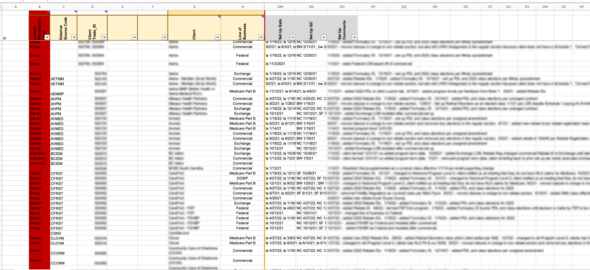
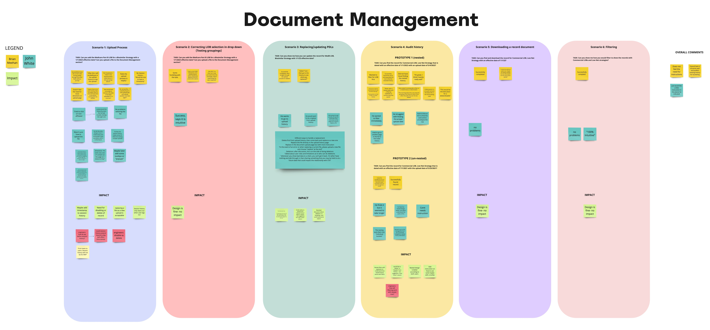

CVS Client Tracker in a Nutshell
How might we streamline the workflow and reduce bad data?
The Problem Space
Our user group is small but vital. Though there are only two of them right now, they coordinate with several groups; some are client-facing and provide them with contract details to enter into spreadsheets while others depend on them for information to calculate the client's rebates.
With their current process, all work is done in one Excel spreadsheet without any clear separation of workflow and requires lots of horizontal scrolling. Entries for new client contracts are intermixed with those for management/renewal of old ongoing client contracts.
The Product Team is tasked with validating all incoming data from the Sales and Legal teams while also providing information to Rebates and other tertiary teams that request specific data on a client at any given moment.
A Service Blueprint of the workflow from end-to-end was created to understand the Medical Rebates ecosystem and workflow.
See my notes and reflections in these side notes over here!

Exploring the unknown
User interviews with all Medical Rebate adjacent staff were conducted via Webex where participants were able to share their screen and walk the team through their current day process. This list included Management, Sales, and Underwriting, Product Team, Rebate Research and Legal teams.

Initial findings from our interviews:
Users are concerned about data accuracy and want one "source of truth".
I joined the team after initial user interviews and affinity mapping were completed.
However, I understood how interconnected and dependent all the teams were on each other's work and how data error can impact work efficiency throughout the process.
Synthesizing and analyzing data
Our team spent time Affinity Mapping our user interview notes and completed several exercises to give us direction as we entered the next phase in the Double Diamond process of Design thinking: Discovery and Framing.
Key insights from initial analysis:
Affinity Mapping our notes and findings gave us a way to find patterns and bucket similarities in experience across all users.
- The Product Team is at the center of a client's contract lifecycle
- Majority of other teams in the process rely on them to gather, organize, and maintain client contract information.
- Users find the current day tracker tedious and time consuming to setup and look for information
- Manual entry means lots of clerical error and lack of accurate data
- Lack of one source of truth. Users are not sure what data they can rely on
I learned through reviewing our research that the Product Team serves as a bottleneck in the workflow. By helping improve their workflow, we increase efficiency throughout.
Visualizing and understanding our users
Our team spent time Affinity Mapping our user interview notes and completed several exercises to help us through the "Discovery and Framing" phase of the Design Thinking "Double Diamond" process. This involved the following exercises: problem discovery and prioritization, insight prioritization, risk analysis, and solution brainstorming and prioritization.
Together, we brainstormed "How Might We" statements to get our brains working on exploring different possible solutions.
These exercises allowed us to explore all the possible problems before tackling the most impactful and helpful one.
We then used different "How Might We" statements to explore different solutions. All members (Engineers, Designers, Product Managers) contributed.
After researching and defining our target users, we created an extensive user persona to keep our user in the forefront of our mind.
Our team created User Profiles/Personas for all Medical Rebates users, but we are focusing on the Product Team for MVP. The persona makes sure we keep all the users' needs and wants in mind.
Collaborate, brainstorm, ideate, repeat
After initial solution brainstorming with our core XP/Agile Product team, we brought in our two users (one of whom is our Business PM) to collaborate with us in a 2-day Design Studio workshop where we provided our main "How Might We" problem statements and gave individuals time to sketch out solution ideas.
We then shared our ideas to the team, did a second round of sketching where participants can improve or add on to their ideas using others' ideas. Afterwards, the team collaboratively identified key and common features or elements.
This was excellent for gathering diverse perspectives by collaborating with engineers, Product Managers, users, and designers to find different solutions to one problem as well as bounce ideas off one another.
It also gave us insight into what our users are looking for and validate whether the design team is on the right track.
User Maps and Info Architecture
With a bulk of our research done, our team decided we needed to map out the current user flow state as well as ideal/future user flow. Our users' current day workflow is in a spreadsheet with lots of horizontal scrolling, manual entry, reliance on comments as a changelog, and lack of clarity on workflows (adding something new versus maintaining).

As a design team, we planned to continue talking to our users and conduct more research on specific features as we started building, but we had enough to get started.
We utilized the user interview notes for reference and current day tracker as a visual guide to create two diagrams:
1) The ideal workflow in our tracker from beginning to end.
2) A hierarchy of how their clients are set up and bucketed. In order to ensure we understood their workflow, we validated the diagrams with the users.
These two diagrams continue to serve as our version of informational architecture as we design and build each part of the new tool.
We took into consideration their present day as well as their needs as we created them, updating them as needed.
Low Fidelity Designs
After our Design Studio and Mapping exercises, we (designers) created low fidelity mockups together through a series of individual brainstorming, sharing, and iterating. We shared these with users for initial validation as well as get buy-in from the stakeholders to continue investing in the product.
Low Fidelity screens allowed us to show concepts quickly. Plus, the key stakeholders were less interested in the details and more on whether we had a viable solution.
We continued to iterate and eventually moved away from some of these initial ideas. However, as we designed and validated, we ended up coming back to a lot of these early concepts.
Validating and Testing
Now that we have aligned with the business stakeholders on the plans and goals, it was time for execution. Throughout this MVP build phase, we have continued to research with users and meet with our team for design critiques and feasibility discussions.
Throughout the process, we run usability tests to validate with our users. We conducted recorded moderated tests with clickable prototypes - where users shared their screen and talked aloud - and A/B testing to see which design option performed best. Notes were consolidated into a Miro board for easy analysis and sharing.

I learned the nuance of writing open-ended but targeted questions that can elicit valuable/helpful user responses without leading them.
Where we are and what is next
We are starting to wrap up MVP and create a list of Post-MVP features to consider after our re-alignment meeting. In the meantime, we have created a workable solution that consolidates their documents and workflow in one tool, allows for some automation of data, and ultimately improves the current process time.

In the spirit of MVP, we have iterated multiple times, taking into account user needs, technical feasibility, business, demands, and good user experience to create the minimum viable product that our users can use now.
I have learned how to push for features our users need but also think about how to provide it in a way that is "good enough for now", keeping the polished version for the next MVP iteration cycle.